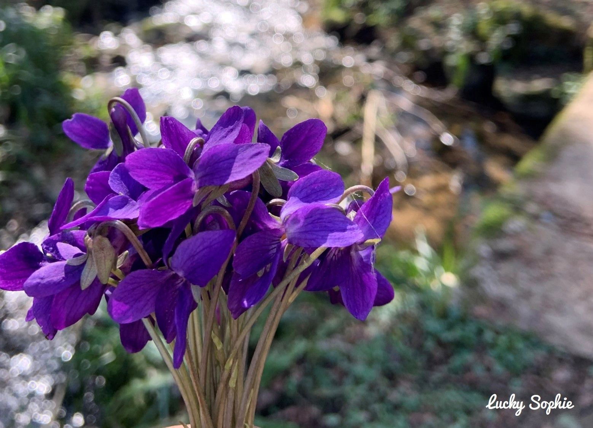
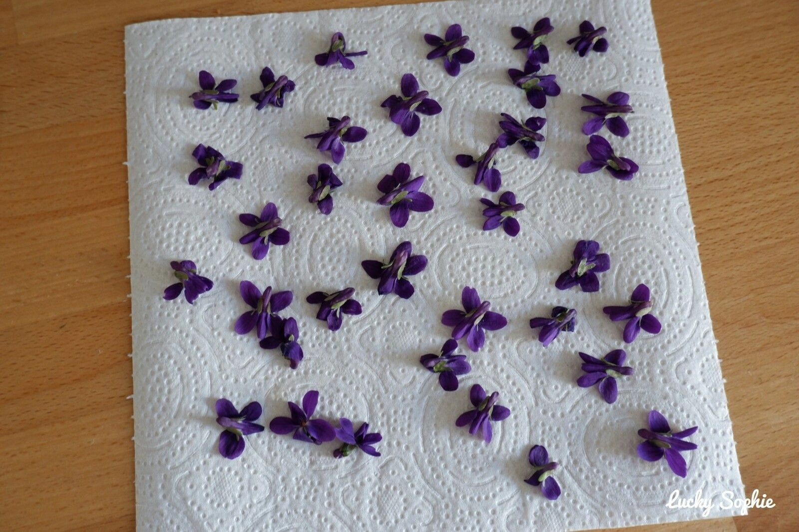
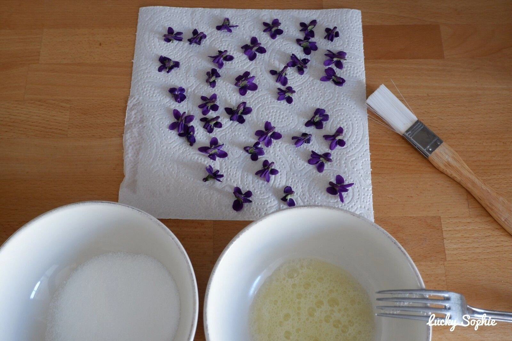
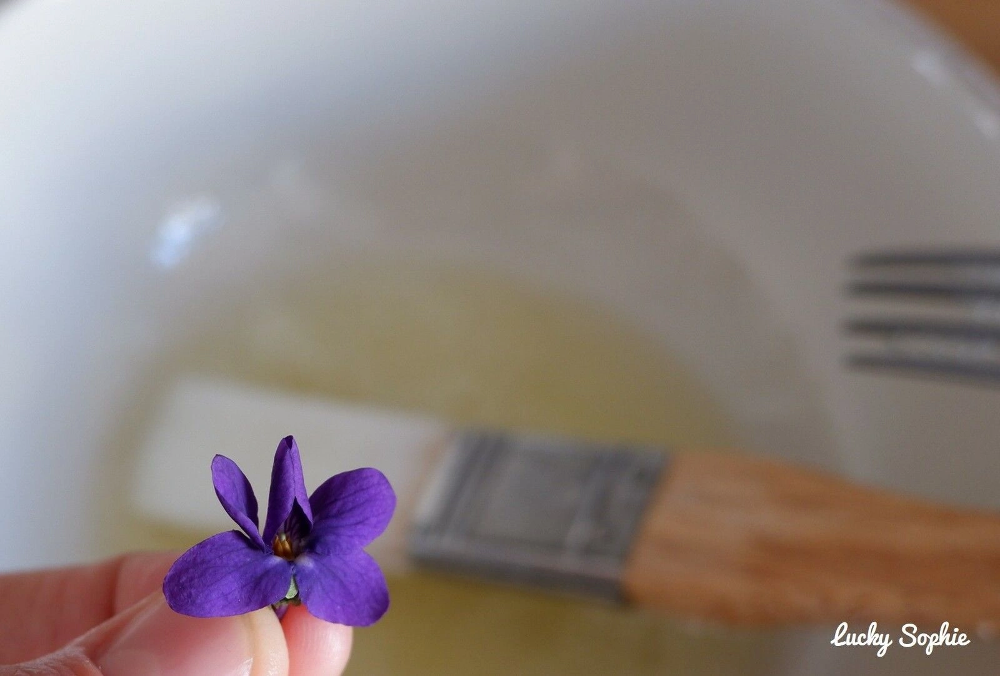
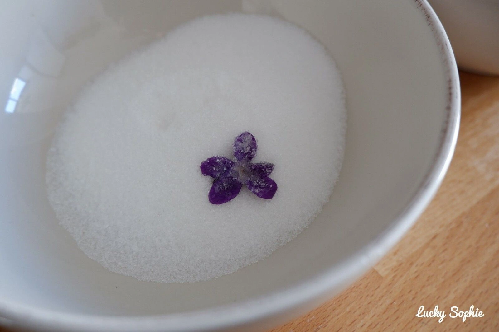
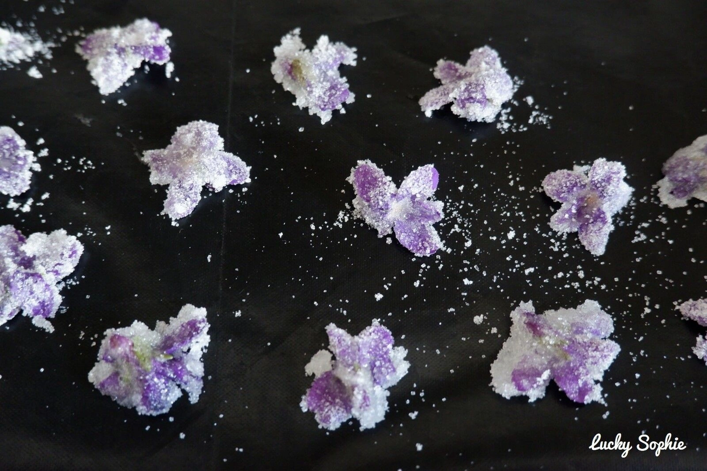
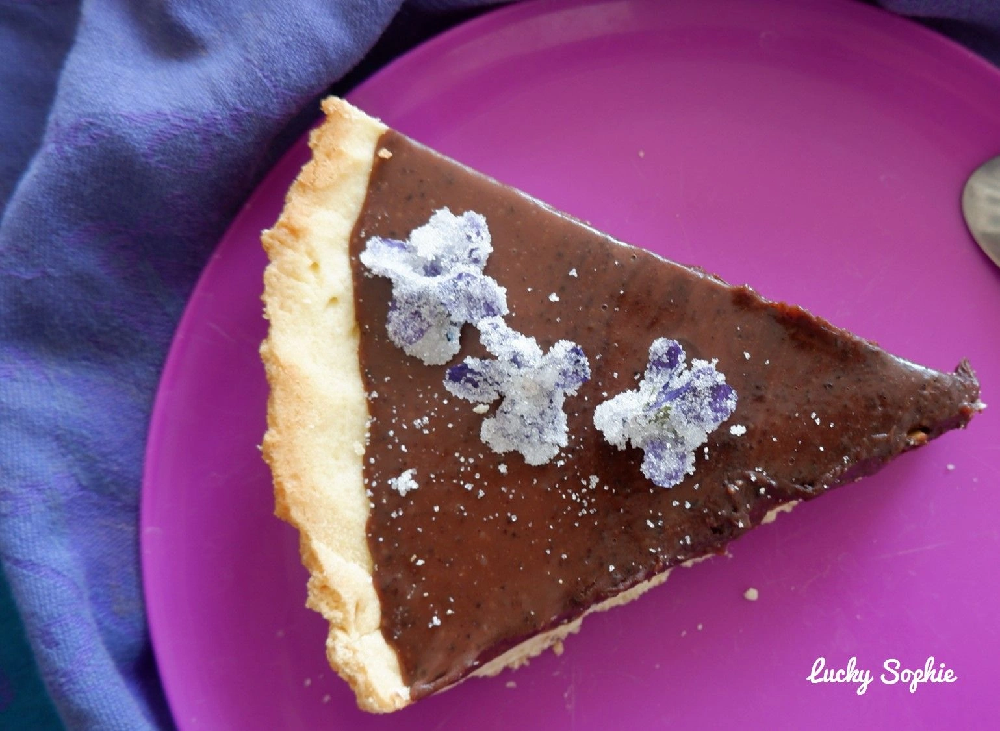
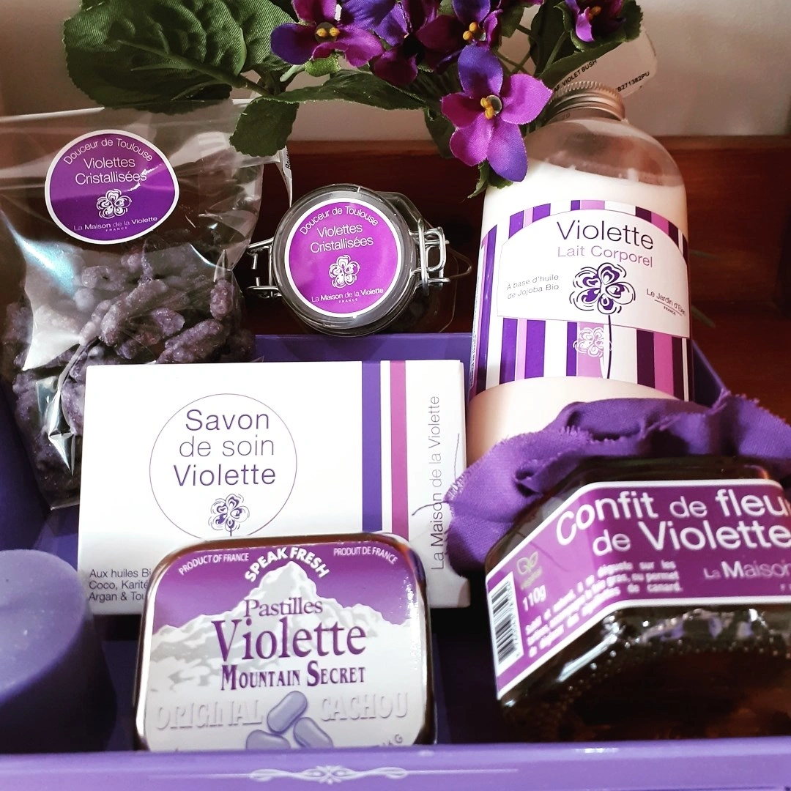

Violettes cristallisées
(bonbons)
Ingredients
- 1 egg white
- 100 grams caster sugar
- 1 handful of fresh violets (picked from a pollution-free area)
Step 1
Pick and clean the violets: Pick fragrant 1 handful of fresh violets (picked from a pollution-free area) — the more scented, the better. Remove the stems as close to the flower as possible. Gently dip them in cold water, then spread them out open-faced between two sheets of paper towel. Repeat until the paper stays dry.
Step 2
Beat the egg white: Lightly beat 1 egg white with a fork — just enough to loosen it. Do not whip it into stiff peaks, as the sugar won't stick if it's over-beaten.
Step 3
Coat with egg white: Using a fine brush, gently apply the egg white to each violet, keeping the petals open and separated. This method (vs. dipping) helps prevent the petals from sticking together.
Step 4
Sugar the violets: Place each coated violet into a bowl filled with 100 grams caster sugar and sprinkle sugar generously over it until fully coated. Don't be shy with the sugar — the excess will fall off once dry.
Step 5
Dry: Lay the violets well spaced on a baking tray lined with parchment or a silicone sheet. Place in a sunny spot if possible. They are ready when completely hard and crisp — about 120 minutes in the sun.
Step 6
Store: Store in a jar or airtight container. The excess sugar that collects at the bottom is wonderfully fragrant — use it to flavour plain yoghurt.
1 Recepie stolen from luckysophie.com
2 Fun fact: Violettes de Toulouse have been made since the 19th century and became the symbol of the city!
3 Tip: Use violets picked on a dry day — flowers picked after rain tend to be damp and less fragrant, and won't crystallise as well.
4 Tip: These are best used as decoration for chocolate tarts, ganaches, or celebration cakes.







